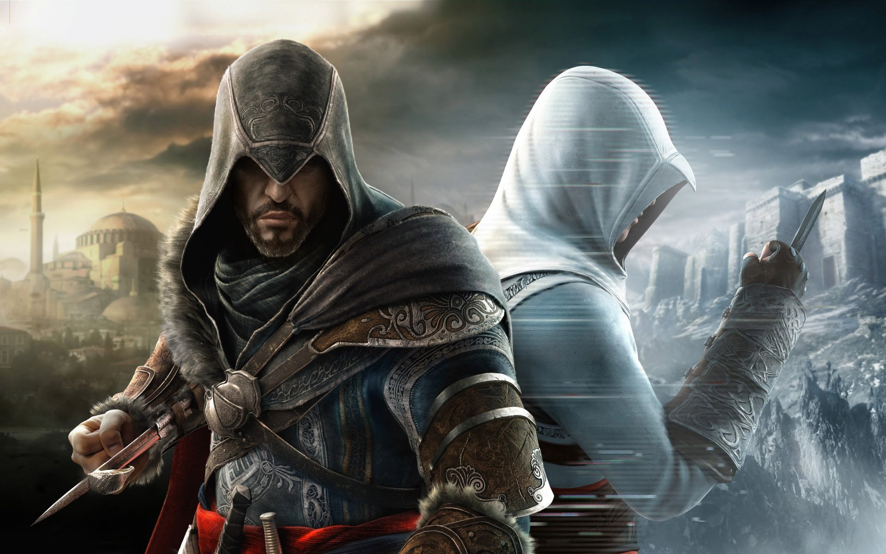

Saga Assassin's Creed

O jogo começa após os eventos de Assassin's Creed: Brotherhood. Desmond está em coma e está escondido no "Animus" para que sua consciência não seja destruída. Ele acorda dentro de uma ilha, onde o Sujeito 16 explica a ele que sua mente está dividida em três partes: Altaïr, Ezio e sua, e que ele só acordará do coma se terminar de ver todas as memórias restantes de Ezio e Altaïr para que o "Animus" não tenha mais nada para mostrar e permita que ele separe as memórias. Também permite que você saiba que ele, para o "Animus", é um vírus que deve ser eliminado e que 16 farão todo o possível para mantê-lo ativo e que ninguém notará sua presença. Depois disso, 16 diz o que, se Desmond estiver com pressa, ele será capaz de chegar ao funeral de Lucy, revelando assim que Lucy morreu no final do terceiro jogo. Desmond entra nos Portões Negros do "Animus", revivendo mais uma vez as memórias de seu antepassado Ezio Auditore,que se encontra a caminho de Masyaf em desejo de realizar o sonho de seu pai: encontrar a biblioteca de Altaïr, o assassino ancestral de Desmond que mudou a história dos assassinos para sempre. Durante sua jornada, ele conta todas as suas aventuras para sua irmã Claudia através de cartas.
Ezio viajou para a fortaleza do ex-assassino em Masyaf para descobrir os segredos que Altaïr havia descoberto anteriormente, e encontrar o verdadeiro propósito dos assassinos. Ao chegar, descobriu-se que Masyaf foi levado pelos templários. Ezio, foge para as entranhas do castelo, onde descobre a entrada da biblioteca de Altaïr. Ele também aprende que precisa de cinco "chaves" para entrar na biblioteca; os templários descobriram um sob o palácio do Sultão Otomano e o resto está escondido em Constantinopla,que faz parte do Império Otomano. Ele viaja para lá e é recebido por Yusuf Tazim, líder da Ordem dos Assassinos, e faz amizade com um jovem estudante chamado Suleiman. Ezio conhece Sofia Sartor, uma jovem viajante italiana e colecionadora de livros, com quem acabará se apaixonando. Sofia ajuda Ezio e descobre a localização das chaves restantes, mantendo suas intenções e posicionando um segredo dela.
Enquanto isso, Constantinopla está em caos devido aos conflitos entre o príncipe e seu irmão Ahmed Selim, que estão lutando por quem herdará o Sultanato. Preso no meio do conflito, Suleiman revela a Ezio que ele é um príncipe otomano e que suspeita que os templários estão por trás da luta. Ezio descobre evidências de que Manuel Palaiólogos, com o apoio dos templários, está tentando criar um exército para derrubar os otomanos e restabelecer o império bizantino. Ezio mata Manuel e recupera a chave final, apenas para descobrir que Ahmet é o verdadeiro líder dos Templários para abrir a biblioteca de Altair.
Durante esses eventos, Ezio usa as chaves em sua posse para testemunhar a vida de Altair após os eventos retratados no primeiro jogo. Depois de matar Al-Mualim, Altaïr tomou posse do fruto do Éden e assumiu a liderança dos Assassinos. Um dos assassinos, Abbas, não apoiou Altaïr, devido a eventos passados, por matar Al Mualim. Quando Altaïr e sua esposa, Maria, deixam Masyaf por 10 anos, para repelir a invasão mongol, Abbas organiza um golpe de Estado, assume o controle dos assassinos e executa o mais novo dos filhos de Altair. Altaïr busca vingança; mas enquanto Maria tenta detê-lo, a raiva de Altair foi sentida pelo "Fruto do Éden" e faz com que ele matasse Maria. Altaïr é forçado a fugir com seu filho mais velho, Darim, e entra em exílio auto-imposto por 20 anos. Altaïr eventualmente retorna a Masyaf,mata Abbas e toma seu lugar de direito como líder dos Assassinos. Anos mais tarde, um idoso Altaïr codifica as memórias das cinco chaves de Masyaf que Ezio precisa, depois de confiar as chaves a Niccoló.
Em Constantinopla, Ezio descobre que Yusuf foi morto e que Ahmet sequestrou Sofia, exigindo as chaves em troca de sua vida. Ezio concorda, mas imediatamente segue em busca para garantir a segurança de Sofia. Ele recupera as chaves, mas antes de poder lidar com Ahmet, Selim chega com seus exércitos e executa Ahmet, depois de dizer que seu pai "fez sua escolha". Devido à aprovação de seu filho Suleiman, Selim diz a Ezio que ele deve deixar Constantinopla, avisando-o que ele nunca poderá voltar. Depois de terminar essa memória, o "Animus" começa a apagar os dados, incluindo o excesso da ilha "Animus". Dezesseis se sacrifica para evitar que Desmond seja eliminado pelo "Animus".
Ezio e Sofia retornam a Masyaf, onde Ezio usa as chaves para abrir a biblioteca de Altair, encontra-a vazia, exceto pelo esqueleto de Altaïr e uma sexta chave, então descobre que a biblioteca não era para guardar os livros, mas sim um cofre destinado ao "Fruto do Éden". Através da chave, Ezio descobre que Altaïr, de 92 anos, decidiu se selar dentro dela, durante um ataque a Masyaf,onde morreu para preservar o segredo. Ezio sai com o "Fruto" da biblioteca, dizendo: "Já vi o suficiente para toda a vida." Ele então começa a falar diretamente com Desmond, sem saber exatamente quem ele é ou onde ele está, mas sabendo que ele está olhando para ele. Ezio informa Desmond de sua intenção de se retirar dos assassinos, acreditando que cumpriu seu propósito. Ele expressa a esperança de que Desmond seja capaz de encontrar as respostas para as perguntas que ele e Altaïr trabalharam tanto para descobrir, mas isso não acabou para os assassinos.
Desmond recebe uma palestra de um deus, um membro da primeira civilização ou, em si, a Civilização Antiga, Júpiter, que explica as coisas sobre a catástrofe, e mostra um vídeo bastante relevante sobre a catástrofe que aconteceu com "Aqueles que Vieram Antes", Júpiter explica que a primeira civilização construiu inúmeras criptas para estudar métodos para salvar o planeta da destruição. Todos os dados coletados são transmitidos para um centro de cofre, onde os dados foram testados. Nenhum dos métodos foi eficaz, no entanto não foi possível parar a explosão solar da destruição de sua civilização. Júpiter diz a Desmond que ele tem o poder de salvar o planeta de uma explosão solar uma segunda vez, mostrando-lhe a localização do cofre central. A história termina quando Desmond acorda e diz suas primeiras palavras: "Eu sei para onde precisamos ir." Este será o ponto de partida para a sequência, Assassin's Creed III. Em teoria, será o lugar que ajudará a evitar essa catástrofe solar.